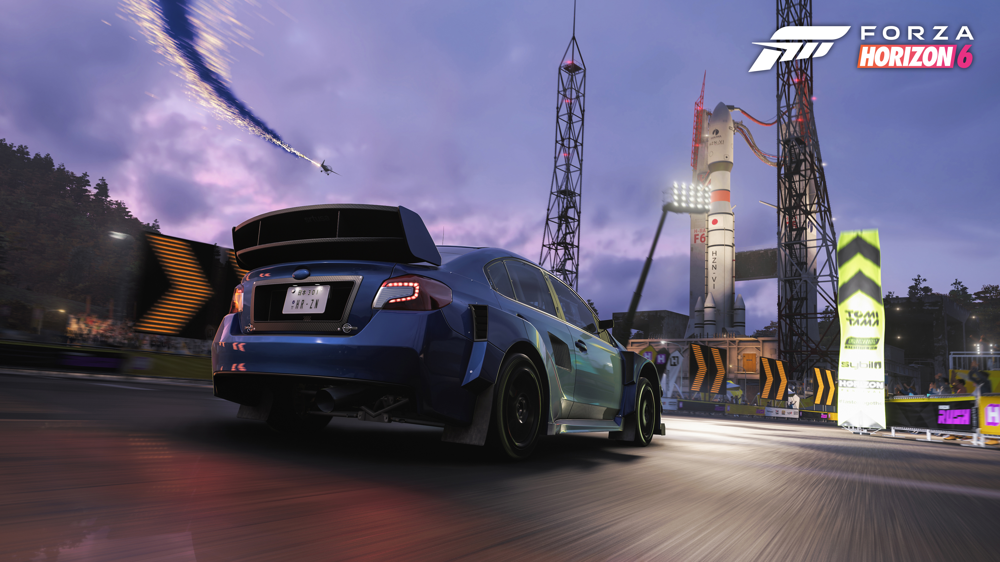
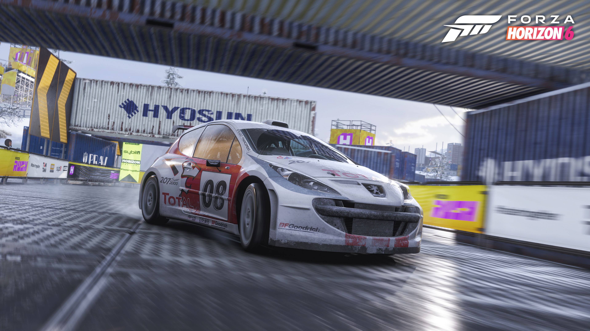

El Ferrari rojo domina la escena mientras atraviesa un paisaje otoñal con el Monte Fuji al fondo. La sensación de movimiento y detalle refleja el enfoque cinematográfico y realista del juego. Una carrera donde la belleza del entorno se mezcla con la adrenalina de los superdeportivos más exclusivos.
Categoría · カテゴリー
El Subaru preparado para rally acelera bajo la lluvia junto a una plataforma de lanzamiento iluminada. Las luces, reflejos y efectos climáticos crean una atmósfera intensa y futurista. Una experiencia que combina cultura automovilística japonesa, velocidad y espectáculos visuales impresionantes.
Categoría · カテゴリー
El Lamborghini naranja irrumpe en la carretera con una presencia agresiva y un sonido inconfundible. Su diseño aerodinámico resalta entre las luces de la ciudad y las curvas de montaña japonesas. Cada aceleración transmite potencia pura mientras el entorno refleja velocidad y lujo extremo. Una máquina creada para dominar festivales Horizon con estilo, precisión y adrenalina absoluta.
Categoría · カテゴリー
El Peugeot blanco de competición destaca en Forza Horizon 6 por su espíritu rally y rendimiento técnico. Cubierto de detalles deportivos y patrocinadores, atraviesa circuitos mojados y terrenos desafiantes a máxima velocidad.
Categoría · カテゴリー